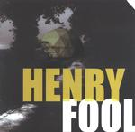

| Artist: | Henry Fool |
| Title: | Henry Fool |
| Label: | Cyclops CYCL 103 |
| Length(s): | 51 minutes |
| Year(s) of release: | 2001 |
| Month of review: | [03/2002] |
| 1) | Friday Brown | 1.13 |
| 2) | Bass Pig | 2.57 |
| 3) | Poppy Q | 2.42 |
lateshow
| 4) | Midnight Days | 2.17 |
| 5) | Blindman One | 1.11 |
| 6) | Poppy Z | 2.58 |
| 7) | Blindman Two | 2.02 |
| 8) | Grounded | 4.37 |
| 9) | The Laughter That Turned To Ice | 3.44 |
| 10) | Jazz Monkey | 3.03 |
| 11) | Judy On The Brink | 3.16 |
| 12) | The David Warner Wish List | 3.47 |
| 13) | Heartattack | 3.44 |
| 14) | The Mellow Moods Of Malcolm Mcdowell | 6.54 |
| 15) | Dreamer's Song | 4.10 |
| 16) | Tuesday Weld | 2.58 |
The next five tracks together form the song Lateshow. The soothing lazy vocals of Bowness can be heard here for the first time. His recognizable voice points the finger at No-Man immediately. In a way the music affects me like an impressionist painting: simmering, hazy, vague. We move right into Blindman One on which we hear saxophone and keyboards. Poppy Z has a bit of a Japan rhythm in the beginning, but turns out to be quite a pacy tune with some distorted keyboards, a tribal groove and a fleeting sax. Interesting. A nod in the direction of say Soft Machine with plenty of experimentation. Not what you might expect. Blindman Two brings us back to the moodiness of before. The easy-goingness of the music extends into the dreamy Grounded, which reintroduces the vocals of the first part, but with a bit more orchestration.
No-Man again in The Laughter That Turned To Ice, slow moving with subtle acoustic guitar and accidental tones from the sax. The easy-going jazziness returns in Jazz Monkey, a soothing tune notwithstanding the rolls on the drums. The sound is warm, because of the use of the Fender Rhodes.
Judy On The Brink is one of those melodic vocal miniatures, fragile and riddled with mellotron, The David Warner Wish List is a combination of meandering jazzrock with blurpy atmospherics. Almost like a live improvisation getting more and more active throughout the song. Not for everyone this. Like King Crimson but jazzier.
Heartattack is another pastoral vocal track, but one which becomes slightly more up-beat later with the drumming of Fudge and a brimming organ. It is striking that most of these, on the outside similar sounding songs, turn out to be quite recognizable after only a few listens.
Laid back jazziness reigns on The Mellow Moods Of Malcolm McDowell, but with a modern sound and plenty of atmospherics on for instance guitar. Dreamer's Song is an intimate vocal track with a choice selection of synths, piano, mellotron, organ and electric piano. Tuesday Weld is an instrumental closer with a Twin Peaks mood, a tune in which the instrumentalists seem to continually hold themselves back.